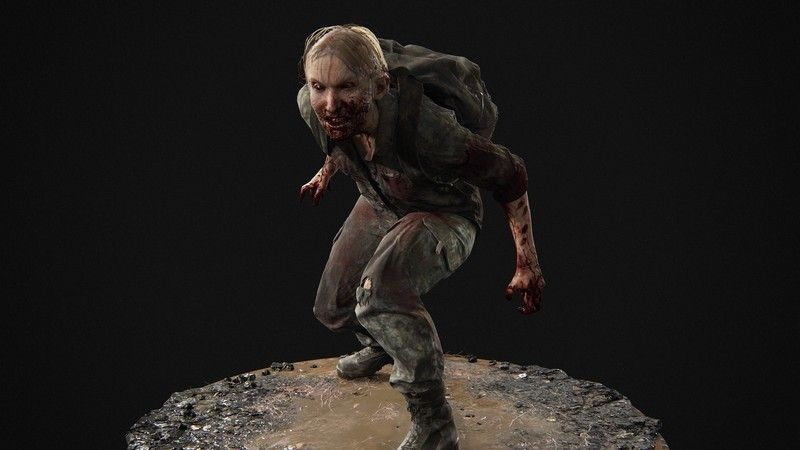
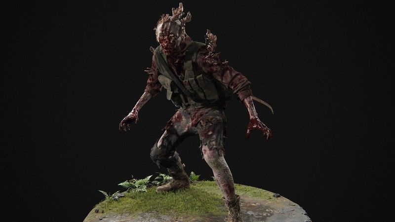
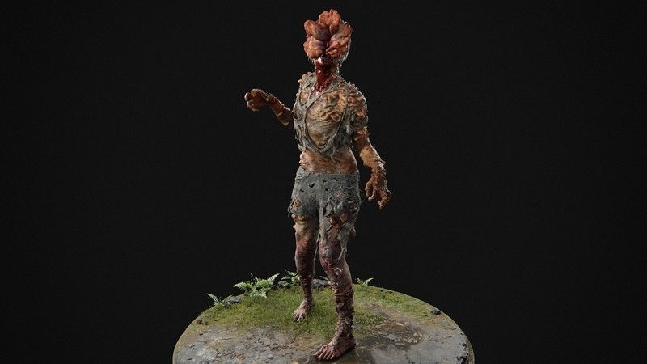
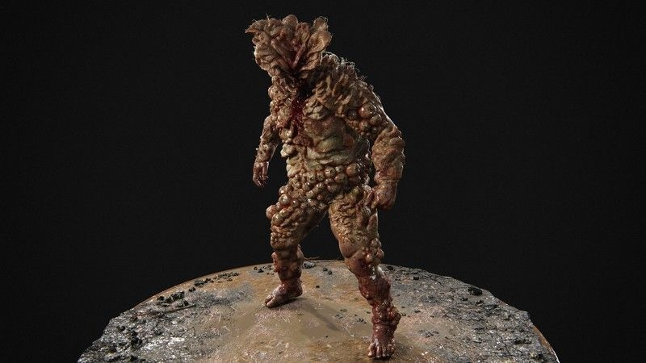
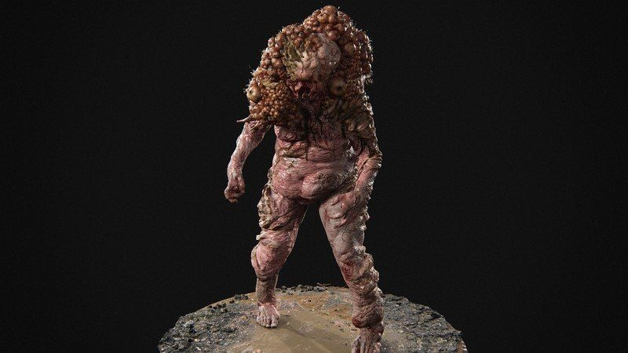
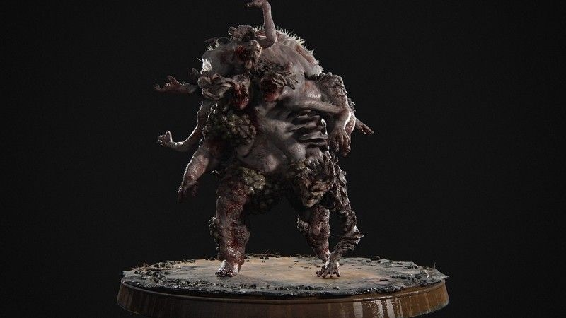

На первом этапе заражения бегуны – одни из самых распространенных. Их можно найти блуждающими и рыдающими, они бросаются прямо на вас, если заметят. К счастью, бегуны слабы практически ко всему. Один выстрел в голову из любого пистолета подавит их.

На второй стадии заражения кордицепсом сталкеры, представляют собой странную помесь бегунов и щелкунов. У них все еще есть видение, и они гораздо более осторожны, чем другие зараженные, атакуют с разных сторон и прячутся.

сцена 3 инфекции, возможно, являются самыми знаковыми в «The Last of Us». Кордицепс полностью пророс и уничтожил глаза хозяина, покрывая его лицо толстым грибком и заставляя его щелкать, используя эхолокацию, чтобы обнаружить неудачливую добычу. Они также достаточно сильны, чтобы схватить и убить мгновенно.

Кордицепс дошел до 4 стадии заражения — «Топляк». Вздутие живота покрывается налетом за годы роста грибка. Тяжело бронированные повсюду, они устойчивы к стрельбе, бросают мешочки с микотоксиновой кислотой.

Это странное существо – своего рода мутация. Поскольку его рот был покрыт грибком, он не кусается. Вместо этого он приближается и выпускает массивную струю кислого газа, которая быстро обожжет и убьет вас.

Названный в честь редкого феномена Крысиного Короля, произошедшего в животном мире, Крысиный Король – предмет кошмаров. Множество зараженных, в том числе по крайней мере один «Топляк» и один «Сталкер», слились воедино, в результате чего образовалась многорукая и многозубая мерзость. По сути, это не столько стадия заражения, сколько ужасающая, неестественная анафема.